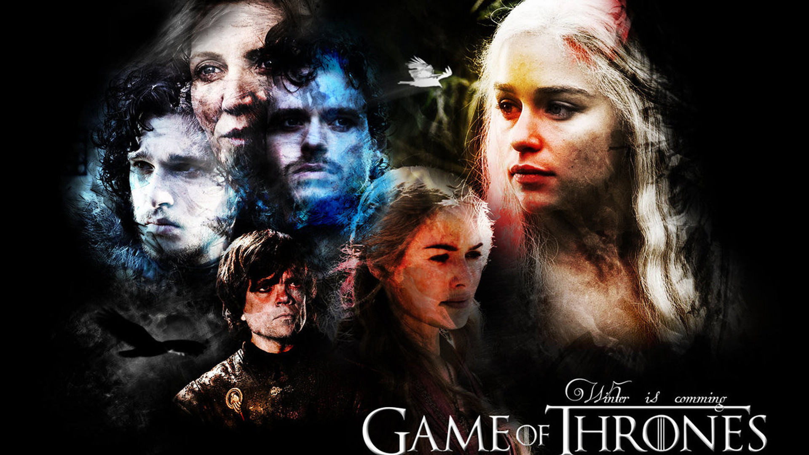

A terceira temporada de Game of Thrones é uma das mais empolgantes. Personagens importantes morrem, situações sexy surgem e alguém briga com um urso.
Chegou o Outono…
Em Westeros, o inverno pode durar gerações inteiras e marcar as pessoas de forma irreparável. Assim como Curitiba em Julho, o lema dos Starks “O Inverno está chegando” reflete isso. E com a chegada do outono, eles andam até com um sorrisinho maroto na cara.